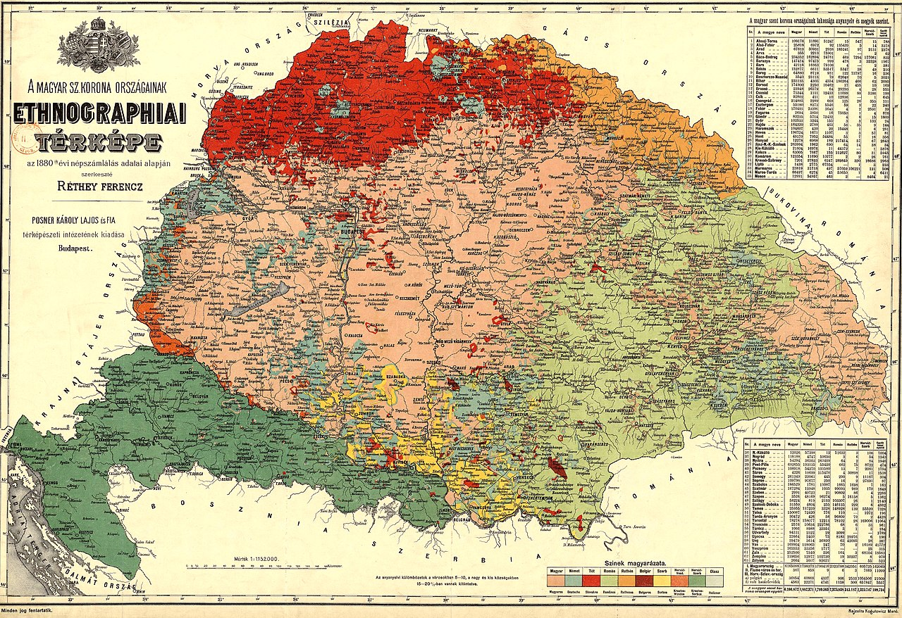
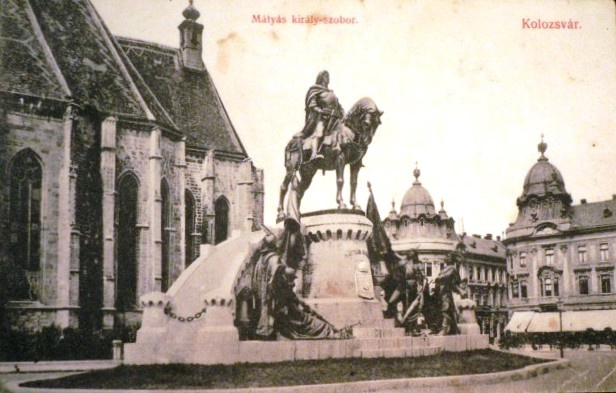
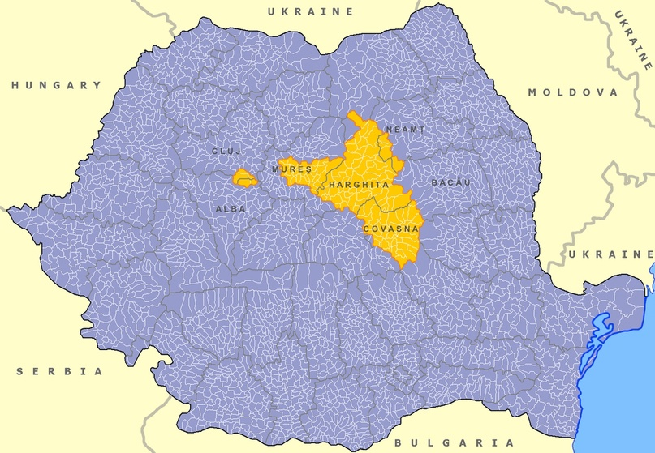

Почему Венгрия и Румыния враждуют до сих пор?
Автор статьи: Максим Вахминцев
Опубликовано: 28 октября 2024
Опубликовано: 28 октября 2024
Статья в группе ВК Историческая империя: https://clck.ru/3LzzLV
Венгры и румыны исторически имеют давнее противостояние несмотря на то, что и Венгрия, и Румыния сегодня входят в ЕС и НАТО. На футбольных матчах обеих национальных сборных болельщики хозяев освистывают гимн соперника, а также вывешивают плакаты с цифрой "1918". Именно в этом году Румыния аннексировала Трансильванию, которая на протяжении почти 1000 лет входила в состав Венгерского королевства. В этот период румынские православные крестьяне, составлявшие большинство населения региона, угнетались венгерскими католическими магнатами.

Венгры и румыны исторически имеют давнее противостояние несмотря на то, что и Венгрия, и Румыния сегодня входят в ЕС и НАТО. На футбольных матчах обеих национальных сборных болельщики хозяев освистывают гимн соперника, а также вывешивают плакаты с цифрой "1918". Именно в этом году Румыния аннексировала Трансильванию, которая на протяжении почти 1000 лет входила в состав Венгерского королевства. В этот период румынские православные крестьяне, составлявшие большинство населения региона, угнетались венгерскими католическими магнатами.
Этническая карта Венгерского королевства к началу ХХ века.
Также в Трансильванию еще в Средние века стали проникать немецкие поселенцы после того, как Тевтонский орден накануне своего перемещения в Пруссию предпринял неудачную попытку колонизации Трансильвании. Немцы и секеи основали здесь поселения, образовавшие затем так называемое "Семиградье" (нем. Siebenbürgen).
После падения Венгерского королевства в 1526 году и его оккупации османами, Трансильвания в XVI - начале XVIII веков оставалась последним оплотом венгерской государственности. Она пользовалась в составе Османской империи ограниченной автономией, а ее князья были вассалами султанов.
В 1711 году Габсбурги ликвидировали независимость Трансильвании и присоединили ее к своим наследственным землям. При этом она не была присоединена к Венгрии и получила статус великого герцогства, управляемого австрийскими генерал-губернаторами.

После падения Венгерского королевства в 1526 году и его оккупации османами, Трансильвания в XVI - начале XVIII веков оставалась последним оплотом венгерской государственности. Она пользовалась в составе Османской империи ограниченной автономией, а ее князья были вассалами султанов.
В 1711 году Габсбурги ликвидировали независимость Трансильвании и присоединили ее к своим наследственным землям. При этом она не была присоединена к Венгрии и получила статус великого герцогства, управляемого австрийскими генерал-губернаторами.
Памятник королю Венгрии Матьяшу Корвину в Коложваре (ныне румынский Клуж-Напока)
После 1867 года империя Габсбургов была преобразована в двуединую монархию Австрии и Венгрии. Венгерские консервативные элиты получили возможность проводить мадьяризацию в национальных окраинах Венгерского королевства, в том числе в Трансильвании. Ей подверглись не только местные румыны, но и саксы - потомки немецких колонистов. В 1902 году в Коложваре (ныне Клуж-Напока) возле католического собора святого Михаила был открыт памятник уроженцу города, королю Венгрии Матьяшу Корвину, при котором страна во второй половине XV века пережила свой наивысший расцвет.
В августе 1916 года, после блестящих побед русской армии в Галиции и Буковине под руководством генерала А. А. Брусилова, Румыния изъявила желание вступить в Первую мировую войну на стороне Антанты. Последняя обещала ей присоединение, после окончания войны, венгерской Трансильвании. Румынская армия, незначительно вклинившись во вражескую территорию, была разбита австро-германскими войсками. По мирному договору Австро-Венгрия и Германия получили право на использование румынских ресурсов, в том числе нефти, для своих военных и экономических нужд.
В августе 1916 года, после блестящих побед русской армии в Галиции и Буковине под руководством генерала А. А. Брусилова, Румыния изъявила желание вступить в Первую мировую войну на стороне Антанты. Последняя обещала ей присоединение, после окончания войны, венгерской Трансильвании. Румынская армия, незначительно вклинившись во вражескую территорию, была разбита австро-германскими войсками. По мирному договору Австро-Венгрия и Германия получили право на использование румынских ресурсов, в том числе нефти, для своих военных и экономических нужд.

Румынская кавалерия входит в Алба-Юлию, декабрь 1918 года.
В декабре 1918 года румынская армия, исполняя волю Румынского национального совета в Алба-Юлии (венгр. Дьюлафехервар), вступила в Трансильванию и присоединила регион к Румынии. Правительства Австрии и Венгрии были заняты собственными проблемами и не смогли помешать отторжению Трансильвании. В 1919 г. Румыния, став сильнейшей, наряду с Югославией, державой Балкан, и будучи членом Антанты, предприняла военную интервенцию в Венгрию, направленную на борьбу с коммунистами Белы Куна. Румынская армия, мстившая за многовековую эксплуатацию венгерскими помещиками румынских крестьян, совершила столько грабежей и причинила столько разрушений в Венгрии, что Антанта пригрозила той исключением из союза и прекращением выплаты репараций от Германии и Австро-Венгрии.
4 апреля 1920 года в 16:32 по центральноевропейскому времени, делегация Венгрии во главе с графом Альбертом Аппоньи, подписала Трианонский мирный договор. Этот день, наряду с 29 августа 1526 года, стал черным в истории венгерской государственности. Страна потеряла 2/3 своей территории, большую часть промышленных предприятий и сельскохозяйственных угодий.
В числе прочего Венгрия признала также переход Трансильвании в состав Румынского королевства. Последнее проводило политику румынизации, выводя из официального использования венгерский язык и переименовав крупнейшие города Трансильвании.
К примеру, Дьюлафехервар, Надьсебен и Коложвар получили новые наименования - Алба-Юлия, Сибиу, Клуж-Напока. Католические и протестантские общины этнических венгров были взяты под контроль государства.
Венгерские политики требовали ревизии "Трианонского позора", возвращения исконных земель страны. Адмирал Миклош Хорти, вставший во главе Венгрии в 1920 году и принявший титул регента, в 1930-х годах сблизился с нацистской Германией. Последняя провела так называемые Венские арбитражи, призванные урегулировать территориальные споры между двумя союзниками Германии - Венгрией Хорти и Румынией Антонеску. Последняя была вынуждена уступить Северную Трансильванию в обмен на обещание присоединения после войны с СССР Транснистрии вместе с городом Одесса.

Карта бывшей Венгерской автономной области и непризанного Секейского края в составе Румынии.
Его территории располагаются в уездах Харгита, Ковасна, Муреш, Клуж и Алба.
Его территории располагаются в уездах Харгита, Ковасна, Муреш, Клуж и Алба.
Конфликты между Венгрией и Румынией по вопросу положения трансильванских венгров и секеев не прекратились и после Второй мировой войны. В 1955 году обе страны вступили в Организацию Варшавского договора, которую возглавлял СССР.
Москва взяла на себя роль посредника в венгерско-румынском конфликте; под ее давлением румынские власти еще в 1952 году были вынуждены пойти на создание Венгерской автономной области. Однако в 1968-м, после прихода к власти Николае Чаушеску, взявшего, подобно Иосипу Брозу Тито, курс на лавирование между Западом и Москвой, автономия венгров и секеев была упразднена.
Секуритате, перенимая опыт румынской королевской разведки, проводила репрессии не только в отношении сочувствовавших Венгерской революции 1956 года, но и в целом против видных политических и религиозных деятелей Секейского края. Собственно, попытка ареста венгерского священника в декабре 1989 года стала катализатором Румынской революции, приведшей к свержению режима Чаушеску.
Сегодня трансильванские венгры и секеи, несмотря на признание румынскими властями двуязычия, продолжают борьбу за восстановление автономного Секейского края. Среди них больше половины исповедуют православие, 41% - католицизм. Православие, являющееся и сегодня крупнейшей христианской конфессией в Румынии, исповедуют лишь чуть более 2% румынских мадьяр. Венгры постепенно иммигрируют в свою историческую родину, что приводит к сокращению численности населения Секейского края.
Москва взяла на себя роль посредника в венгерско-румынском конфликте; под ее давлением румынские власти еще в 1952 году были вынуждены пойти на создание Венгерской автономной области. Однако в 1968-м, после прихода к власти Николае Чаушеску, взявшего, подобно Иосипу Брозу Тито, курс на лавирование между Западом и Москвой, автономия венгров и секеев была упразднена.
Секуритате, перенимая опыт румынской королевской разведки, проводила репрессии не только в отношении сочувствовавших Венгерской революции 1956 года, но и в целом против видных политических и религиозных деятелей Секейского края. Собственно, попытка ареста венгерского священника в декабре 1989 года стала катализатором Румынской революции, приведшей к свержению режима Чаушеску.
Сегодня трансильванские венгры и секеи, несмотря на признание румынскими властями двуязычия, продолжают борьбу за восстановление автономного Секейского края. Среди них больше половины исповедуют православие, 41% - католицизм. Православие, являющееся и сегодня крупнейшей христианской конфессией в Румынии, исповедуют лишь чуть более 2% румынских мадьяр. Венгры постепенно иммигрируют в свою историческую родину, что приводит к сокращению численности населения Секейского края.